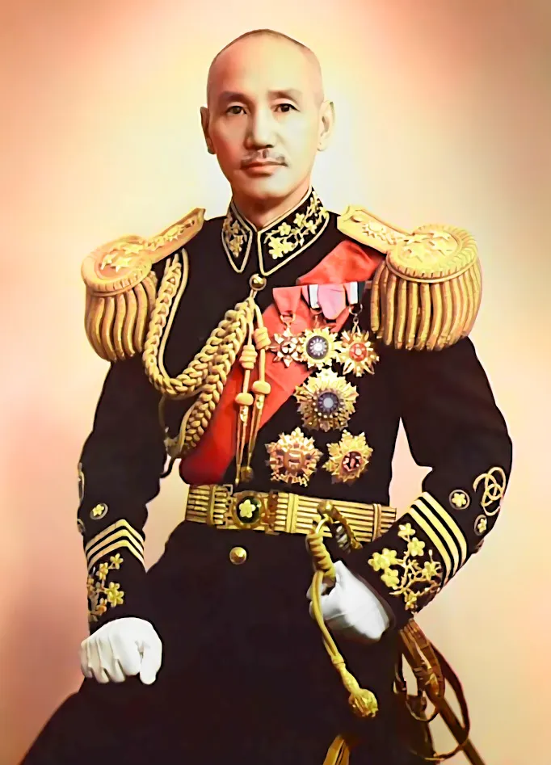
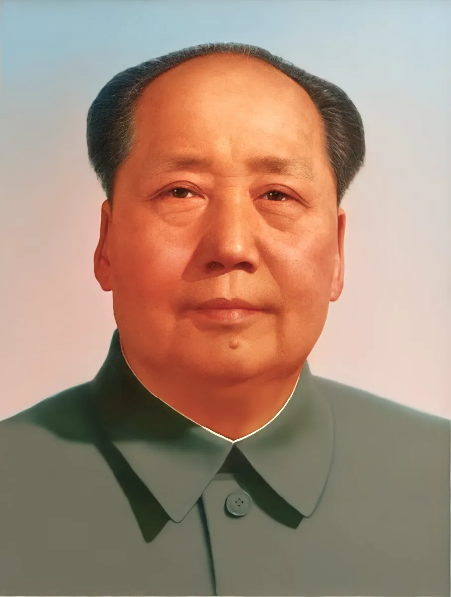
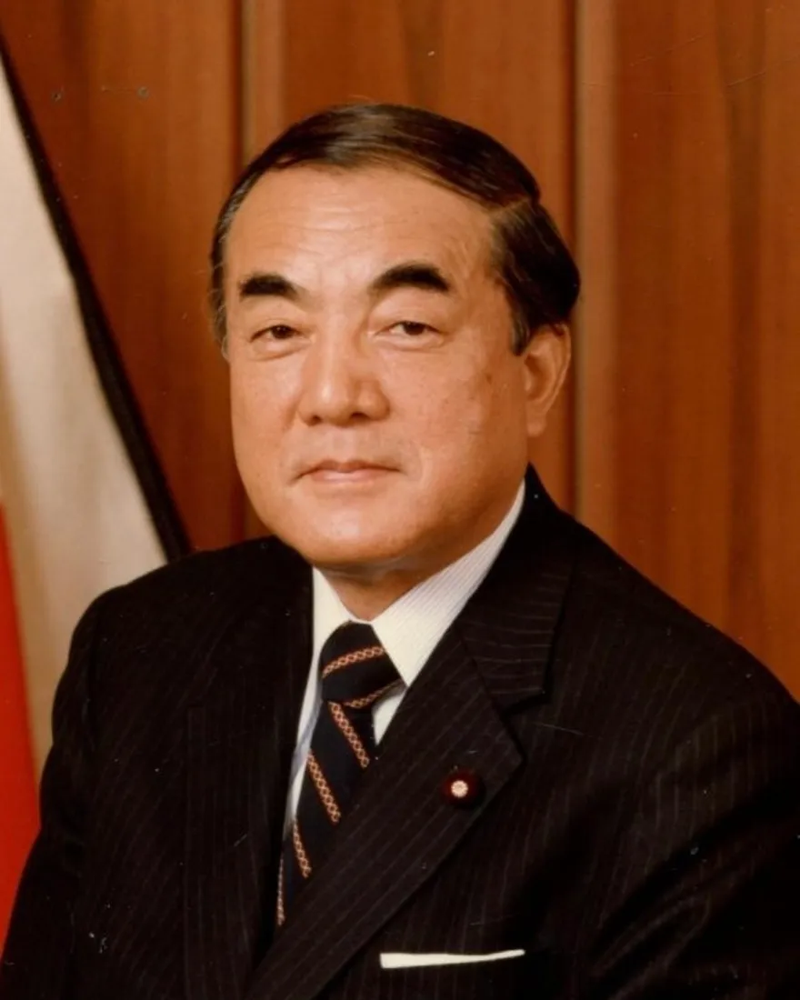
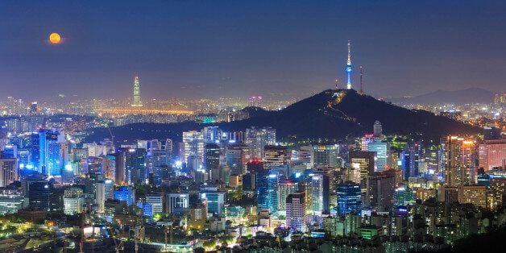

장제스
그 유리한 상황과 미국의 지원을 받고도 패배해서 나라 전체를 마오쩌둥에게 내줌
결국 자본주의 중국은 대만이라는 작은 나라로 줄어듬

마오쩌둥
그 큰 중국을 다 쳐먹고서 대약진운동, 문화대혁명등으로 확실하게 조짐
거진 한 20년을 확실히 조짐으로서 중국은 제대로 발전 못하고 그때를 틈타 한국이 확실한 기회를 잡게됨

나카소네 야스히로
1985년 미국의 압박으로 플라자 합의를 수용하여 급격한 엔고현상이 발생했고
이에 대응해 수출 기업들을 살린다는 명목으로 기준금리를 역대 최저 수준(2.5%)으로 낮추고 대대적인 부동산 규제 완화를 감행
그러다보니 시중에 풀린 막대한 자금이 주식과 부동산으로 쏠리며 역사상 전무후무한 대규모 거품 경제를 만들었고
이게 이후 펑 터지며 일본의 잃어버린 xx년 을 만듬

지금 중국에 자본주의 도입되고 급성장한걸 보면 알겠지만
만약 중국이 마오쩌둥이 승리해서 확실히 조지지 않았다면 한국에 경제성장 기회는 없었을 수 있음
또 대만이 지금 1인당 GDP에서 한국을 추월한걸 보면
장제스가 패하지않고 중국에서 확실한 자본주의 국가를 건설했다면 그 역시 한국은 경제성장 기회가 없었을 수 있음
또 일본이 버블붕괴로 꼬라박 하지 않았다면
한국이 그 틈을 타 한단계 더 경제성장 하기 쉽지 않았을 수 있음
사실 중국과 일본 어마어마한 규모의 강대국들 사이에서 이정도 경제발전한것도 대단한것임
원래였다면 초강대국들 사이에서 이도 저도 못하고 쩌리 상태로 남아있어야 하는게 정상인데
중국이 알아서 확실하게 망해주고 일본도 뒤따라 버블 경제로 조지면서
한국이 그 사이에서 정말 처음이자 마지막 기회를 잘 잡아 성장하게 됨
중국이 공산화되어서 미국이 더 한국을 지원해준 것도 있지